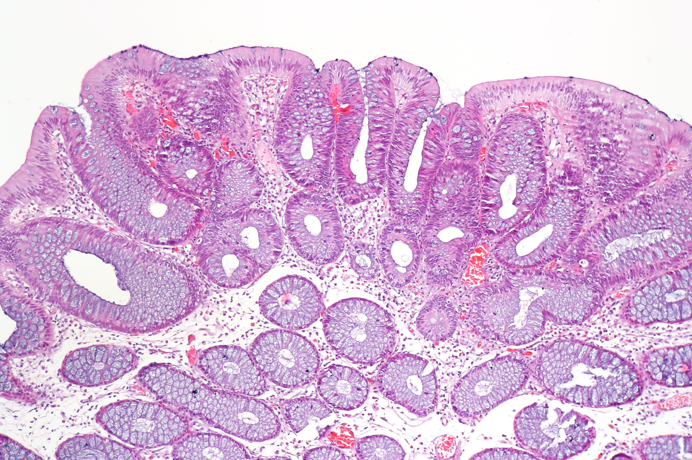
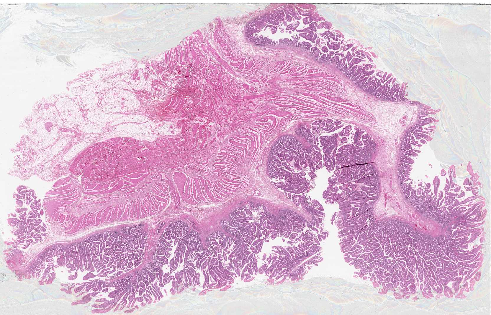
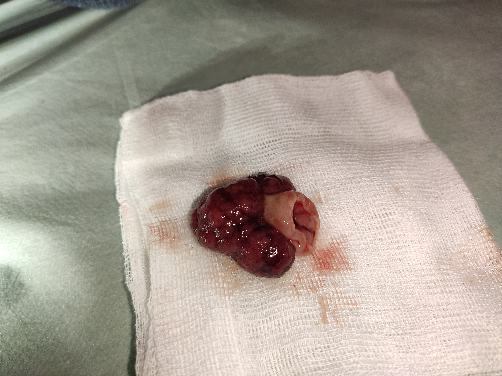
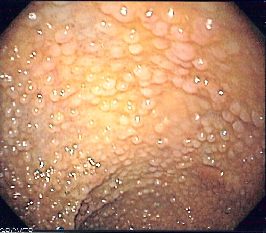
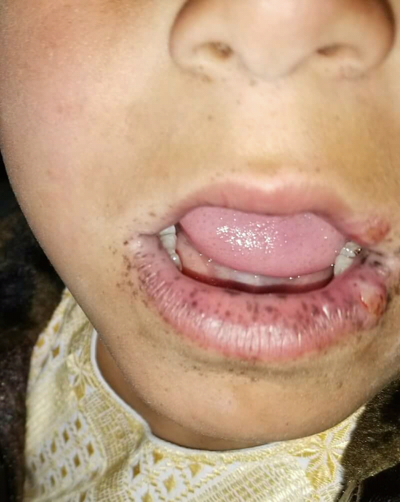
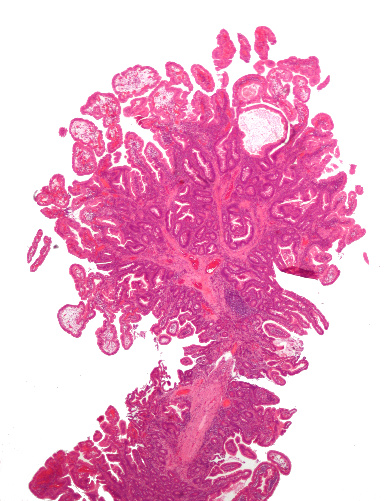

Pólipos e câncer colorretal: dominar o que vem antes do tumor
O colorretal é o tumor do tubo digestivo com maior potencial de cura — por isso é o mais estudado, e por isso seu pré-câncer caiu de patamar em prova (bancas de São Paulo desde 2022). Esta aula é de rotina, não de doença: achou um pólipo, qual a histologia? Qual a conduta? Como faço o acompanhamento? Tudo gira em torno da sequência adenoma-carcinoma e das síndromes hereditárias que multiplicam o risco. 14 páginas para você nunca mais errar uma questão de pólipo.
haustração · cólon
14páginas
26questões
9esquemas interativos
SM1o limite da cura1000 micras
Trilha da aula
Armadilhas que esta aula desarma
Pediculado × séssil é macroscópico; tubular × viloso é microscópico — não são a mesma coisa.
O vilão é o viloso (pior prognóstico). O tubular é o melhor.
A classificação de Haggitt/níveis é só para carcinoma em pólipo — nunca para adenoma benigno.
SM1 (até 1000 micras) é o limite da cura endoscópica; SM2/SM3 ou nível 4 = colectomia.
Lynch não é polipoide, mas o paciente ainda passa pela sequência adenoma-carcinoma.
Pontes com as aulas 3 e 4
Aula 3 (CCR): a sequência adenoma-carcinoma é a história natural do tumor que lá foi tratado; o rastreio aos 50 anos é o mesmo gancho.
Aula 4 (fígado): o seguimento pós-CCR caça a recidiva e a metástase hepática que cura com CEA + TC.
O eixo do módulo: "até onde o tumor invadiu decide a conduta" reaparece como SM1.
O que a banca quer desta aula
Separar as duas classificações de pólipo (macro × micro), saber que o viloso, o > 2 cm e a displasia de alto grau são os fatores de risco, dominar os níveis de Haggitt e o limite SM1, decorar os seis critérios de cura da polipectomia e os intervalos de vigilância, e reconhecer cada síndrome hereditária pela mutação, herança (todas autossômicas dominantes), idade de rastreio e cirurgia: PAF (APC), Gardner/Turcot, Peutz-Jeghers (STK11), Lynch (Amsterdam + BRAF).
Página 2 / 14
?
De todos os tumores do tubo digestivo — esôfago, estômago, pâncreas, fígado — por que é o colorretal que mais temos a obrigação de dominar, a ponto de estudar o que vem antes dele aparecer?
Por que estudar o pré-câncer: a sequência adenoma-carcinoma
A resposta é uma só: cura. O CCR é o tumor do trato gastrointestinal com o maior potencial de cura e o melhor prognóstico — curam-se até pacientes com metástase hepática (o famoso "M1 que cura", da aula de tumores hepáticos). Justamente porque é o mais curável, é o mais estudado; e porque é o mais estudado, conhecemos sua história natural inteira. É o único câncer do qual sabemos, passo a passo, como a célula sai do normal e chega ao tumor.
Esse caminho tem nome: sequência adenoma-carcinoma. Quase todo CCR percorre essa trilha — primeiro surge um pólipo adenomatoso, que vai acumulando mutações até virar um adenocarcinoma. A primeira mutação a aparecer, sempre, é a do gene APC (Adenomatous Polyposis Coli). Quem nasce com o APC normal e o muta por acaso lá pelos 40–50 anos tem CCR esporádico; quem herda o APC já mutante terá CCR muito mais precoce. Dominar o pré-câncer é interceptar a sequência antes do carcinoma.
Normal → adenoma → adenocarcinoma. A primeira mutação é sempre a do APC; depois o adenoma acumula mutações até virar câncer. Clique em cada etapa.
Clique numa etapa da sequência
Toque no epitélio normal, no adenoma ou no adenocarcinoma para entender onde a mutação do APC entra e por que tirar o pólipo intercepta o câncer.
O detalhe que muda o gabarito
A primeira mutação da sequência é sempre a do gene APC — vale para o esporádico e para o hereditário. A diferença é quando: no esporádico, uma única célula do cólon erra a mitose por volta dos 40–50 anos; no hereditário, todas as células já nascem com o APC mutante, e o câncer aparece décadas mais cedo (às vezes antes dos 20). Por isso o esporádico só é rastreado a partir dos 50, e as síndromes desde a adolescência.
Pergunta
Qual é a primeira mutação da sequência adenoma-carcinoma e o que ela faz?
Correta. O APC (Adenomatous Polyposis Coli) é o primeiro passo, tanto no esporádico quanto no hereditário; ele dá origem ao adenoma, que depois acumula mais mutações até o carcinoma.
Errada. O KRAS participa da progressão (acúmulo intermediário), mas não é a primeira mutação — quem abre a sequência é o APC.
Errada. A perda de TP53 é um evento tardio, ligado à transformação final em carcinoma, não ao início.
Errada — e é pegadinha. O BRAF se associa à via serrilhada e ao CCR esporádico (e ajuda a excluir Lynch, P12), não à abertura da sequência adenoma-carcinoma clássica.
Pergunta
Por que o CCR esporádico só começa a ser rastreado por volta dos 50 anos, enquanto as síndromes hereditárias rastreiam desde a adolescência?
Correta. O tempo médio para uma célula adquirir o erro de mitose que muta o APC é de 40-50 anos. Quem herda o APC mutante já parte do passo 1 desde a vida intrauterina, por isso adoece muito mais cedo.
Errada. Pólipos podem ocorrer antes dos 50 (e ocorrem cedo nas síndromes). O corte etário do rastreio populacional reflete a probabilidade, não uma impossibilidade biológica.
Errada. O rastreio é eficaz justamente porque intercepta o pólipo; nas síndromes ele começa cedo exatamente por ser eficaz. A idade muda com o risco.
Errada. O esporádico passa, sim, pela mesma sequência — apenas começa mais tarde, quando a célula adquire a mutação do APC.
Página 3 / 14
Dois eixos para classificar um pólipo: o contexto e a forma
Antes da histologia, dois jeitos simples de classificar um pólipo. O primeiro é o contexto: ele apareceu sozinho, numa pessoa sem herança (esporádico, risco menor), ou veio "aos montes" — 50, 100, 1000 pólipos — numa síndrome polipoide hereditária (risco bem maior de virar câncer)? O segundo é a forma macroscópica, o que o endoscopista vê: o pólipo é pediculado (tem pescoço, haste e cabeça, como um cogumelo) ou séssil (espalhado, de base larga, sem haste)?
A confusão clássica — repetida cinco vezes em aula
Pediculado × séssil é MACROSCÓPICO (a forma, o que se vê). Tubular × viloso × tubuloviloso é MICROSCÓPICO (a histologia, o que o patologista vê — P5). Não confunda "pediculado" com "tubular" só porque ambos lembram um "tubinho". São eixos diferentes. O que embaralha ainda mais: pediculados costumam ser adenomas tubulares (mais benignos) — mas isso é uma tendência, não uma equivalência.
Cogumelo × montanha. Pediculado tem haste e cabeça; séssil é uma elevação de base larga. Clique em cada forma para ver por que a forma muda a conduta.
Clique numa forma de pólipo
Toque no pediculado ou no séssil para entender por que a forma macroscópica importa na hora de ressecar e classificar a invasão.
Esporádico × síndrome polipoide — não confundir
Esporádico
Sem herança. Em geral poucos pólipos. Risco de malignização menor. Conduta: tirar o pólipo (polipectomia) e seguir.
Síndrome polipoide
Herança. Pólipos aos montes (50, 100, 1000). Risco muito maior. Tirar um a um é inviável — entra cirurgia (colectomia/proctocolectomia, P9).
Pergunta
Um laudo descreve um pólipo "séssil". Essa informação é uma classificação:
Correta. Séssil e pediculado descrevem a FORMA (o que se vê na endoscopia). É um eixo diferente da histologia (tubular/viloso), que só o patologista define.
Errada. Essa é exatamente a confusão que a aula combate. Séssil é macroscópico; tubuloviloso é microscópico. Não se equivalem.
Errada. Séssil não quer dizer maligno. É uma descrição de forma; o risco depende da histologia e dos fatores (tamanho, viloso, displasia).
Errada. A forma do pólipo não define herança. Síndrome se reconhece pelo número de pólipos e pela história familiar, não por ser séssil.
Pergunta
Colonoscopia revela incontáveis pólipos tomando todo o cólon. Qual a implicação imediata para a conduta?
Correta. Diante de centenas/milhares de pólipos, a polipectomia individual é inviável e o risco é altíssimo. O raciocínio vira síndrome hereditária e a conduta passa a ser cirúrgica.
Errada. Tirar mil pólipos um a um não é factível — é justamente o cenário em que a conduta deixa de ser endoscópica e passa a ser cirúrgica.
Errada. Intervalo de 10 anos é para exame normal/baixo risco. Polipose difusa é alto risco e exige conduta ativa, não espera.
Errada. Subestima o quadro. A polipose aponta síndrome; o manejo envolve genética, rastreio precoce e cirurgia, não apenas uma biópsia isolada.
Página 4 / 14
Neoplásico ou não: a taxonomia que decide o risco
A pergunta que organiza todos os tipos de pólipo é uma só: ele tem potencial de virar câncer? Se não é neoplásico, não segue a sequência adenoma-carcinoma — entram aqui o hiperplásico (o mais comum de todos os pólipos), o inflamatório e o hamartoma. Se é neoplásico, ele pode ser benigno (o adenoma, que ainda pode malignizar) ou já maligno (o adenocarcinoma). Clique em cada ramo da árvore para fixar quem é quem.
Uma pergunta na raiz: vira câncer ou não? Não-neoplásico (hiperplásico, inflamatório, hamartoma) × neoplásico (adenoma benigno → adenocarcinoma maligno). Clique em cada nó.
Clique num ramo da árvore
Toque em cada nó para separar os pólipos que não viram câncer dos que viram, e localizar onde o adenoma se encaixa.
Para gravar
Pergunta de prova favorita: "achou um pólipo, qual o tipo mais provável?" Resposta padrão: hiperplásico — o mais comum de todos, e não-neoplásico. Já o "vilão" que precisa de atenção é sempre o adenoma.
Pergunta
Qual é o tipo histológico de pólipo mais comum do cólon, e a que categoria ele pertence?
Correta. O hiperplásico é o mais comum de todos os pólipos e é não-neoplásico. É a resposta padrão quando a banca pergunta o tipo mais provável.
Errada — quase. O adenoma tubular é o adenoma mais comum, mas, entre TODOS os pólipos, o mais frequente é o hiperplásico (não-neoplásico). Atenção ao enunciado.
Errada. O hamartoma é não-neoplásico, mas é raro; aparece sobretudo em Peutz-Jeghers (P11). Não é o mais comum.
Errada em dois pontos. O inflamatório é não-neoplásico (não neoplásico) e não é o mais comum.
Pergunta
Sobre a relação entre adenoma e adenocarcinoma, qual afirmação está correta?
Correta. É a essência da sequência: adenoma (benigno) → adenocarcinoma (maligno). Por isso todo adenoma deve ser ressecado.
Errada. Adenoma é benigno; adenocarcinoma é maligno. Confundi-los inverte o conceito-chave.
Errada — invertido. O sufixo "-carcinoma" denota malignidade; o adenoma é o benigno.
Errada. Ambos são neoplásicos (têm origem na proliferação anormal); a diferença é benigno × maligno.
Página 5 / 14
"Quem é o vilão dos adenomas? O viloso."
o macete que resolve a questão
Histologia do adenoma: o vilão é o viloso
Agora sim, a classificação microscópica — e ela vale só para adenomas (não faz sentido subclassificar um adenocarcinoma, que já é câncer). Pela arquitetura das glândulas vistas ao microscópio, o adenoma é tubular, viloso ou tubuloviloso (mistura dos dois). A diferença é prognóstica: o tubular é o de melhor prognóstico — cerca de 85% nunca viram câncer; o viloso é o de pior — tem a maior chance de transformação maligna. Por isso o macete: o vilão é o viloso.
Tubos × dedos. Tubular = glândulas redondas compactas (melhor); viloso = projeções digitiformes (o vilão); tubuloviloso = mistura. Clique em cada padrão.
Clique num padrão histológico
Toque no tubular, viloso ou tubuloviloso para fixar o prognóstico de cada um — e por que o viloso é o que mais preocupa.
Os três fatores de risco de malignização do adenoma
Um adenoma tem alta chance de virar adenocarcinoma quando tem pelo menos um destes: ser viloso (histologia), medir > 2 cm (tamanho) ou conter displasia de alto grau. Guarde a trinca — ela reaparece nos intervalos de vigilância (P8), só que lá o tamanho de corte muda para 1 cm em alguns critérios.
O esquema acima abstrai a arquitetura; a histologia real confirma o que separa o adenoma de bom prognóstico do perigoso. Compare lado a lado: à esquerda, as glândulas tubulares arredondadas e regulares; à direita, as projeções vilosas longas e digitiformes. É essa diferença de desenho que, na prova, vem descrita como "vilositário" ou "tubular" — e que muda o risco.

Tubular — glândulas redondas (melhor)

Viloso — projeções em dedo (o vilão)
Histologia real das duas arquiteturas, lado a lado: o tubular forma túbulos compactos; o viloso projeta "dedos" para a luz. Quanto mais viloso, maior o risco — é o que o esquema interativo desenha e a lâmina prova. Nephron, via Wikimedia Commons · CC BY-SA 3.0.
A macroscopia entra no mesmo raciocínio: antes de classificar a histologia, o endoscopista descreve a forma. Veja a peça de um pólipo pediculado — cabeça arredondada presa por uma haste — a morfologia que costuma permitir a remoção endoscópica completa.

Pólipo pediculado ressecado: a cabeça da lesão e o pedículo (haste) que a prende à parede — a forma que favorece a polipectomia e cuja margem do pedículo será o ponto-chave da avaliação de cura. via Wikimedia Commons · CC BY-SA.
Pergunta
Entre os adenomas, qual padrão histológico tem o pior prognóstico (maior chance de malignizar)?
Correta. "O vilão dos adenomas é o viloso." É o de maior risco de transformação maligna e um dos três fatores de risco (com >2 cm e displasia de alto grau).
Errada — é o oposto. O tubular é o de MELHOR prognóstico: cerca de 85% nunca viram câncer.
Errada. O tubuloviloso é intermediário (mistura). O extremo de pior prognóstico é o viloso puro.
Errada — nem é adenoma. Hiperplásico é não-neoplásico; a histologia tubular/viloso só se aplica a adenomas.
Pergunta
Qual conjunto representa os fatores de risco de transformação maligna de um adenoma?
Correta. Essa é a trinca clássica. Qualquer um deles eleva o risco e costuma indicar conduta/seguimento mais agressivos.
Errada — é o perfil de baixo risco. Tubular, pequeno e sem displasia é exatamente o adenoma tranquilo (vigilância em 10 anos).
Errada. Isso é descrição macroscópica (e pediculado costuma ser mais benigno). O risco se define pela histologia, tamanho e displasia.
Errada. Isso é clínica de tumor de cólon direito (Aula 3), não fator de risco histológico do adenoma.
Página 6 / 14
Haggitt e Kikuchi: até onde o câncer invadiu decide a cirurgia
Quando o patologista encontra carcinoma dentro de um pólipo ressecado, a pergunta passa a ser: esse câncer precoce (todos são T1) tem risco alto de mandar metástase linfática? Se sim, só a polipectomia não basta — precisa de colectomia com linfadenectomia. Se não, a polipectomia já tratou. O que estima esse risco é a profundidade de invasão, medida por duas classificações que a aula chama em conjunto: Haggitt (níveis 0–4, para o pólipo pediculado) e Kikuchi (subníveis SM1/SM2/SM3 da submucosa, para o séssil).
Atenção: isso é só para adenocarcinoma em pólipo — nunca para adenoma benigno ou hiperplásico. Clique em cada andar do pólipo para ver o nível correspondente e o ponto de corte que decide operar.
Quanto mais fundo, mais perigoso. No pediculado, níveis 0→4 de Haggitt; na parede, SM1/SM2/SM3 de Kikuchi. A linha de corte é SM1 (≤ 1000 µm). Clique em cada andar.
Clique num nível
Toque em cada nível de Haggitt (0–4) e em cada subnível de submucosa (SM1/SM2/SM3) para ver onde está a fronteira entre curar por polipectomia e ter de operar.
A regra de corte para decorar
Carcinoma em pólipo ressecado por polipectomia: níveis 0, 1, 2 ou 3 até SM1 (≤ 1000 micras) = tratado. Nível 3 com SM2/SM3, ou nível 4 = colectomia. E lembre: qualquer carcinoma em pólipo séssil já entra como nível 4 — portanto, opera.
Pergunta
A classificação de níveis (Haggitt) e os subníveis SM (Kikuchi) aplicam-se a:
Correta. A classificação serve para estimar o risco linfático do carcinoma em pólipo. Não faz sentido em adenoma benigno nem em pólipo hiperplásico.
Errada — pegadinha clássica. Adenoma benigno não se classifica por Haggitt; perde-se tempo. É só para carcinoma.
Errada. Hiperplásico é não-neoplásico; não há carcinoma a estadiar por profundidade.
Errada. Só vale quando há adenocarcinoma dentro do pólipo. É o pré-requisito da classificação.
Pergunta
Carcinoma em pólipo pediculado, ressecado por polipectomia, invadindo o pedículo com profundidade de SM3. Qual a conduta?
Correta. O limite de cura por polipectomia é até SM1 (≤ 1000 µm). SM2/SM3 (e nível 4) indicam colectomia pelo risco de metástase linfática.
Errada. Remover o pólipo não basta quando a invasão é profunda (SM2/SM3): o risco linfático exige cirurgia.
Errada. Observação é para adenoma com fragmentação/>2 cm. Em carcinoma SM3, a conduta é colectomia, não vigilância.
Errada. Radioterapia neoadjuvante é do reto baixo (Aula 3), não do carcinoma precoce em pólipo de cólon — aqui se resseca cirurgicamente.
Página 7 / 14
Os seis critérios de cura da polipectomia
Ressecou um pólipo com carcinoma por polipectomia: quando se pode dizer que a remoção foi curativa e dispensa a colectomia? São seis critérios que precisam ser atendidos todos juntos (sobretudo quando há carcinoma — no adenoma benigno alguns nem se aplicam, e há margem para ponderar). Se algum falhar, volta-se à colectomia. Revele um a um e leia o porquê de cada um.
1Margens livres. O pólipo foi removido sem neoplasia nas bordas. Vale para benigno e maligno. Margem comprometida e não reabordável endoscopicamente → colectomia.
2Ressecção em bloco (sem fragmentação / sem piecemeal). O pólipo saiu inteiro, de uma vez. "Lanhar" em pedaços invalida o critério — não dá para garantir a remoção completa do câncer.
3Invasão até SM1 (≤ 1000 micras). Em acesso direto basta "até a submucosa"; desde 2022 as bancas exigem a subdivisão: só vale como cura se ficou em SM1. 500 micras (menos que 1000) também atende.
4Patologia bem diferenciada. Tumor pouco diferenciado é mais agressivo e quebra o critério de cura.
5Sem invasão angiolinfática (linfovascular). Invasão de vasos ou linfáticos eleva o risco de disseminação — não pode haver.
6Sem tumor budding (brotamento tumoral). Aspecto histológico de células tumorais "escapando" na frente de invasão. Presente = não é cura.
Carcinoma × adenoma — onde os critérios mandam
Esses seis critérios são obrigatórios no carcinoma. No adenoma benigno, vários nem fazem sentido (não há "SM" nem budding a avaliar) — pondera-se conforme os fatores de risco (viloso, > 2 cm, displasia). É a mesma fragmentação com destino oposto: no carcinoma, piecemeal = colectomia; no adenoma, piecemeal = só repetir a colonoscopia em 6 meses (P8).
Pergunta
Polipectomia de pólipo com adenocarcinoma: a peça saiu fragmentada (piecemeal), mas com margens aparentemente livres e SM1. Qual a conduta?
Correta. No carcinoma, a ressecção precisa ser em bloco. Fragmentada, não se garante remoção completa: indica-se colectomia, ainda que os demais pareçam favoráveis.
Errada. Faltou o critério de ressecção em bloco. Um critério não atendido já indica colectomia no carcinoma.
Errada — confunde com o adenoma. Repetir em 6 meses por fragmentação é conduta do ADENOMA. No carcinoma, fragmentar = colectomia.
Errada. Não há papel para radioterapia aqui; a conduta é a ressecção cirúrgica (colectomia com linfadenectomia).
Pergunta
Qual destes não faz parte dos critérios de cura da polipectomia de um carcinoma?
Correta (é o que NÃO entra). A topografia não é critério de cura. Os critérios são margem livre, ressecção em bloco, SM1, bem diferenciado, sem invasão angiolinfática e sem tumor budding.
Errada (este É critério). Margem livre é o primeiro critério, válido para benigno e maligno.
Errada (este É critério). Invasão linfovascular eleva o risco de disseminação e quebra a cura.
Errada (este É critério). O brotamento tumoral indica escape de células e impede considerar curado.
Página 8 / 14
Vigilância pós-polipectomia: o intervalo certo da próxima colonoscopia
Polipectomia feita (e, no carcinoma, com critérios de cura atendidos): quando repetir a colonoscopia? As bancas seguem a lógica do USPSTF (a tabela "mundial", reorganizada aqui de forma didática). A regra é: quanto mais e quanto pior o achado (mais pólipos, maiores, vilosos, com displasia, in situ, fragmentados), mais curto o intervalo. Decore os cinco patamares — 10, 5, 3, 1 e 0,5 anos — e você acerta praticamente todas as questões.
Intervalos de vigilância pós-polipectomia (adenoma)
Intervalo
Achado na colonoscopia
10 anos
Nada (exame normal) ou até 2 adenomas tubulares < 1 cm. Alguns citam 5–10 anos.
5 anos
Mais de 2 adenomas tubulares < 1 cm.
3 anos
> 5 adenomas; ou algum > 1 cm; ou algum viloso; ou displasia de alto grau.
1 ano
> 10 adenomas (quase polipose); ou carcinoma in situ ressecado (Haggitt 0).
6 meses
Ressecção em fragmentos (piecemeal); ou adenoma > 2 cm.
O mesmo achado, destinos opostos
Há um paralelo que a banca adora. Diante de ressecção fragmentada ou pólipo > 2 cm: no adenoma, repete-se a colonoscopia em 6 meses (vigilância); no carcinoma, faz-se colectomia (a fragmentação quebra o critério de cura). Mesmo gatilho, conduta inversa — porque os critérios de cura (P7) são do carcinoma e os intervalos de vigilância são do adenoma.
O detalhe do tamanho que muda entre as tabelas
Nos fatores de risco do adenoma (P5), o corte de tamanho é > 2 cm. Já na vigilância, o USPSTF usa 1 cm em vários patamares (e reserva os 2 cm para o intervalo de 6 meses). É a mesma ideia — tamanho importa — com pontos de corte diferentes conforme a finalidade.
Pior achado, intervalo mais curto. Da vigilância tranquila (10 anos) ao reexame em 6 meses. Clique em cada marco para ver o gatilho.
Clique num intervalo
Toque em cada marco (10, 5, 3, 1 ano, 6 meses) para ver qual achado endoscópico define aquele intervalo de vigilância.
Pergunta
Colonoscopia retira 3 adenomas tubulares menores que 1 cm, sem displasia. Qual o intervalo de vigilância?
Correta. Até 2 tubulares pequenos = 10 anos; mais de 2 (como aqui, 3) sobe para 5 anos. Sem fatores de risco adicionais, fica nesse patamar.
Errada — quase. 10 anos vale para nada ou ATÉ 2 tubulares pequenos. Com 3, já passa para 5 anos.
Errada. 3 anos exige > 5 adenomas, ou algum > 1 cm, ou viloso, ou displasia de alto grau. Três tubulares pequenos não atingem esse patamar.
Errada. 1 ano é para > 10 adenomas ou carcinoma in situ. O cenário descrito é bem mais brando.
Pergunta
Um adenoma de 2,5 cm foi removido em fragmentos, sem carcinoma. Qual a conduta de seguimento?
Correta. Ressecção fragmentada e/ou adenoma > 2 cm, em contexto de adenoma (benigno), levam ao reexame em 6 meses — o intervalo mais curto da vigilância.
Errada — confunde com o carcinoma. No carcinoma, a fragmentação indica colectomia; mas aqui é adenoma benigno: a conduta é repetir a colono em 6 meses.
Errada. 3 anos seria para >5 adenomas/viloso/displasia/>1 cm sem fragmentação. A fragmentação e os 2 cm encurtam para 6 meses.
Errada. 10 anos é baixo risco. Um adenoma grande removido em pedaços é exatamente o oposto.
Página 9 / 14
PAF: a polipose adenomatosa familiar e o gene APC
Começam as síndromes hereditárias — todas autossômicas dominantes, todas elevando o risco de CCR. A mais importante é a PAF (polipose adenomatosa familiar) clássica: paciente com o gene APC mutante herdado e 100 a 1000 pólipos adenomatosos no cólon. O risco de desenvolver câncer colorretal ao longo da vida é de 100%. Há duas variantes de número: a atenuada (< 100 pólipos, risco ~80%) e a severa (> 1000 pólipos, risco 100%, igual à clássica). A diferença prática entre clássica e severa é nenhuma; a atenuada é a que muda a conduta.
Cólon impossível de "despolipar". Tira-se o órgão inteiro; o íleo vira reservatório (bolsa ileal). Clique no tapete de pólipos e na bolsa ileal.
Clique no cólon ou na bolsa
Toque no tapete de pólipos para a genética e o risco, e na bolsa ileal para entender a cirurgia da PAF clássica/severa.
As três formas da PAF — o que muda
Forma
Nº de pólipos
Risco de CCR
Cirurgia
Clássica
100 – 1000
100%
Proctocolectomia total + bolsa ileal
Atenuada
< 100
~80%
Pode-se fazer colectomia total (preserva o reto)
Severa
> 1000
100%
Proctocolectomia total + bolsa ileal (igual à clássica)
O esquema mostra a ideia; a colonoscopia real mostra por que não há como "despolipar" esse cólon. Olhe a mucosa: ela está coberta por incontáveis pólipos, um ao lado do outro, do começo ao fim — o "tapete" que define a polipose adenomatosa familiar e torna a remoção individual impossível.

Sigmoidoscopia na PAF: a mucosa inteira forrada por pólipos — o "tapete" que nenhuma polipectomia resolve e que impõe retirar o órgão. Como o reto também é alvo na forma clássica, a cirurgia é a proctocolectomia com bolsa ileal. via Wikimedia Commons · CC BY-SA.
Colectomia total × proctocolectomia total — a diferença que cai
Colectomia total: tira todo o cólon e preserva o reto. Usada quando o risco é alto mas não 100% (PAF atenuada; também Lynch, P12). Proctocolectomia total: tira cólon e reto, deixa só o ânus — reservada para risco de 100% (PAF clássica e severa). Aí entra a bolsa ileal para dar qualidade de vida. Achados extracolônicos para lembrar: retinite pigmentosa e osteomas.
Pergunta
Paciente jovem com centenas de pólipos adenomatosos, mutação do gene APC e história familiar. Qual o risco de CCR e a cirurgia indicada?
Correta. É PAF clássica: APC mutante, 100–1000 pólipos, risco de 100%. Como o reto também é alvo, tira-se cólon + reto (proctocolectomia) e confecciona-se a bolsa ileal.
Errada. 80% e preservação do reto descrevem a PAF ATENUADA (< 100 pólipos). Com centenas de pólipos, é clássica: risco 100% e proctocolectomia.
Errada. ~60% e colectomia total (preserva reto) é o perfil da síndrome de Lynch (P12), não da PAF clássica.
Errada. Tirar centenas de pólipos um a um é inviável e não anula o risco do reto. A conduta é cirúrgica (proctocolectomia).
Pergunta
Por que, após a proctocolectomia total, confecciona-se uma bolsa ileal em vez de ligar o íleo direto ao ânus?
Correta. O cólon é o "armazém" de fezes e absorve água; o íleo não. Ligá-lo direto causaria diarreia incapacitante e desidratação. A bolsa cria um reservatório mais compatível com a vida.
Errada. Na proctocolectomia o reto é retirado por completo — não há reto a preservar. A bolsa substitui a função de reservatório.
Errada. A bolsa é funcional (reservatório), não oncológica. O risco do APC é colorretal; o íleo não é o alvo principal.
Errada. Pode, sim, ser ligado direto — mas com péssima qualidade de vida (diarreia intensa). A bolsa existe justamente para evitar isso.
Página 10 / 14
Variantes da PAF: Gardner e Turcot
Gardner e Turcot são a mesma doença de base que a PAF — mesma mutação do APC, mesma herança autossômica dominante, mesma polipose adenomatosa. O que muda é a manifestação extracolônica associada. A genética da coisa explica por quê: como o APC mutante está em todas as células do corpo (e não só no cólon, como no esporádico), surgem tumores e alterações em outros tecidos. Alterne para fixar cada variante.
Gardner = PAF + manifestações de partes moles e ossos
Polipose adenomatosa do cólon (APC) somada a achados extraintestinais: osteomas (sobretudo da mandíbula/crânio), tumores de partes moles (cistos epidérmicos, lipomas, tumores desmoides) e anomalias dentárias. O cólon ainda manda — o risco de CCR e a cirurgia seguem a lógica da PAF.
Turcot = PAF + tumor do sistema nervoso central
Polipose adenomatosa do cólon associada a tumores do SNC (clássico: meduloblastoma/glioma). É a variante "do cérebro". Mesma base APC e herança autossômica dominante; muda o tumor extracolônico que acompanha.
Vertical, geração após geração. Herança autossômica dominante: 50% de afetados por gestação. Vale para PAF, Gardner, Turcot, Peutz-Jeghers e Lynch. Clique nos pais e na prole.
Clique nos pais ou na prole
Toque em cada indivíduo para entender por que essas síndromes passam direto de geração em geração — a base do critério de Amsterdam.
Pergunta
Paciente com polipose adenomatosa difusa do cólon e osteomas de mandíbula com cistos epidérmicos. Qual variante?
Correta. Gardner = PAF (mesmo APC) + manifestações ósseas (osteomas) e de partes moles (cistos, lipomas, desmoides). O cólon segue a regra da PAF.
Errada. Turcot associa tumor do sistema nervoso central, não osteomas/cistos. O quadro descrito é de Gardner.
Errada. Peutz-Jeghers é hamartomatosa (STK11) com manchas melanóticas, não adenomatosa com osteomas.
Errada. Lynch não cursa com polipose difusa. A polipose adenomatosa + osteomas aponta Gardner.
Pergunta
Sobre a herança das síndromes hereditárias de CCR vistas até aqui (PAF, Gardner, Turcot), qual afirmação é correta?
Correta. Praticamente todas as síndromes hereditárias de CCR são autossômicas dominantes (PAF, Gardner, Turcot e também Peutz-Jeghers e Lynch). É um ponto muito perguntado.
Errada. São dominantes, não recessivas. Uma cópia mutante já basta, por isso passam direto de geração em geração.
Errada. Não há padrão ligado ao X; afetam ambos os sexos igualmente, como esperado em autossômica dominante.
Errada. Ambas compartilham a base APC e a herança autossômica dominante; a diferença é a manifestação extracolônica.
Página 11 / 14
Peutz-Jeghers: a polipose hamartomatosa das manchas
Mudança de categoria: Peutz-Jeghers não é polipose adenomatosa — é hamartomatosa. Ainda há risco aumentado de CCR (dentro de um hamartoma surge adenoma com mais facilidade que no epitélio normal), mas não tão alto quanto na PAF. A mutação é do gene STK11 (herança autossômica dominante, como as demais). O que a denuncia na prova são as manchas melanóticas (melanocíticas) em lábios, mucosa oral e extremidades (pontas dos dedos). Clique nos elementos para fixar.
Manchas que entregam o diagnóstico. Máculas escuras em lábios/dedos + pólipos hamartomatosos do delgado (sangram, intussuscepção). Clique em cada elemento.
Clique nas manchas ou no delgado
Toque nas manchas melanóticas e nos pólipos do delgado para entender por que aqui o cólon não é a primeira preocupação.
O diagnóstico de Peutz-Jeghers muitas vezes se faz olhando o rosto antes do intestino. As máculas escuras concentradas nos lábios e ao redor da boca são patognomônicas — é a pista que o enunciado descreve em palavras e que a foto real ensina a reconhecer.

As manchas melanóticas perilabiais de Peutz-Jeghers: pigmentação que entrega o diagnóstico à inspeção. Atrás delas, porém, estão os pólipos hamartomatosos do delgado — que sangram e causam intussuscepção. via Wikimedia Commons · CC BY-SA.
O hamartoma é a outra metade da síndrome. Diferente do adenoma, ele mistura tecido normal desorganizado — e à histologia mostra a arborização de músculo liso revestida por epitélio que caracteriza o pólipo de Peutz-Jeghers.

Pólipo hamartomatoso de Peutz-Jeghers à histologia: o eixo ramificado de músculo liso ("árvore") coberto por epitélio — hamartoma, não adenoma. É por isso que a síndrome é hamartomatosa, e não adenomatosa como a PAF. via Wikimedia Commons · CC BY-SA.
O que muda no rastreio
Rastreio a partir dos 15 anos (semelhante à PAF, que começa por volta de 12–15). A diferença: aqui o cólon não é a prioridade. Como os pólipos perigosos estão no estômago e no delgado, faz-se endoscopia digestiva alta, estudo do delgado e — pelo risco extracolônico associado — exames como mamografia, entre outros. Mutação a decorar: STK11.
Pergunta
Enunciado: paciente jovem com manchas escuras nos lábios e nas pontas dos dedos e episódios de dor abdominal com sangramento. Diagnóstico mais provável e tipo de pólipo?
Correta. Manchas melanóticas perilabiais/digitais + clínica de hemorragia e intussuscepção do delgado = Peutz-Jeghers, que é hamartomatosa (não adenomatosa), por mutação do STK11.
Errada. PAF é adenomatosa (APC) e não cursa com manchas melanóticas. As máculas escuras apontam Peutz-Jeghers.
Errada. Lynch não tem manchas nem polipose; a clínica e as manchas descritas são de Peutz-Jeghers.
Errada. Gardner traz osteomas e tumores de partes moles, não manchas melanóticas. É adenomatosa, não hamartomatosa.
Pergunta
No rastreio da síndrome de Peutz-Jeghers, por que a colonoscopia não é a primeira preocupação?
Correta. A clínica é dominada pelos pólipos hamartomatosos do trato alto e delgado — daí priorizar EDA e estudo do delgado, além de exames como mamografia, a partir dos 15 anos.
Errada. Há risco aumentado de CCR (adenoma pode surgir dentro do hamartoma). Apenas não é a complicação mais imediata.
Errada. O rastreio começa cedo, a partir dos 15 anos — é síndrome hereditária. O ponto é o sítio prioritário, não a idade.
Errada. A colonoscopia não é contraindicada; apenas não é o foco inicial, que recai sobre o trato alto e o delgado.
Página 12 / 14
Lynch / HNPCC: a síndrome que não faz polipose
A síndrome de Lynch (ou HNPCC — câncer colorretal hereditário não polipoide) é a "estranha do grupo": o paciente não tem múltiplos pólipos. Cuidado com a pegadinha — "não polipoide" não significa "câncer sem passar pela sequência": ele passa pelo adenoma-carcinoma, só não acumula pólipos pelo intestino. O defeito é uma instabilidade de microssatélites (falha no reparo do DNA) que faz mutações surgirem a qualquer momento. As mutações mais importantes são MLH1 e MSH2 (~90% dos casos); a MSH2 associa-se a mais tumores urológicos (bexiga, rim).
A regra do 1-2-3. 1 caso < 50 anos · 2 gerações consecutivas · 3 familiares (1 de 1º grau). Clique em cada número.
Clique num número da regra
Toque em 1, 2 ou 3 para montar os critérios de Amsterdam — e lembrar que eles dependem de uma família conhecida.
Os critérios de Amsterdam exigem investigar a família — nem sempre possível (paciente adotado, sem história). Quando não dá, vale a análise genética: diante de um CCR com menos de 50 anos, busca-se a mutação. Mas atenção ao algoritmo: só fecha Lynch por genética se houver MLH1 ou MSH2 (ou outra associada) E ausência de mutação do BRAF — porque o BRAF presente sela o diagnóstico de CCR esporádico. Também é preciso excluir PAF (não pode haver múltiplos pólipos). Revele o algoritmo:
ATem família para avaliar? Se sim, aplique Amsterdam (1-2-3). Atendidos os critérios → Lynch.
BSem família? Análise genética em CCR < 50 anos: procure MLH1 / MSH2 (instabilidade de microssatélites).
CMutação presente, mas só isso não basta. Exclua PAF (sem múltiplos pólipos / APC) e confirme ausência de BRAF.
DBRAF presente → esporádico, não Lynch. Lynch = MLH1/MSH2 presente + BRAF ausente + PAF excluída.
Tumores associados e tratamento
Lynch espalha tumores: o mais importante é o câncer de endométrio (em mulheres); também intestino delgado, pâncreas e tumores urológicos (ureter, pelve renal, bexiga — sobretudo com MSH2). O CCR aparece mais cedo que na população geral (≈ 40 anos), mas não tão jovem quanto na PAF. Como o risco de CCR fica em torno de 60% (não 100%), o tratamento é colectomia total — preserva o reto para melhor qualidade de vida (diferente da proctocolectomia da PAF clássica).
Pergunta
CCR aos 44 anos, sem história familiar acessível. Análise genética mostra MLH1 presente e BRAF ausente, sem múltiplos pólipos. Qual o diagnóstico mais provável?
Correta. Sem família para Amsterdam, fecha-se por genética: mutação de reparo (MLH1) + ausência de BRAF + exclusão de PAF. O BRAF ausente afasta o esporádico.
Errada — quase. MLH1 pode mesmo aparecer no esporádico, mas o que selaria esporádico é o BRAF PRESENTE. Aqui o BRAF está ausente, o que aponta Lynch.
Errada. Não há múltiplos pólipos (PAF foi excluída) e a mutação é de reparo (MLH1), não do APC.
Errada. Justamente quando não há família, o algoritmo genético (MLH1/MSH2 + BRAF ausente + excluir PAF) permite o diagnóstico.
Pergunta
Confirmada síndrome de Lynch, qual a cirurgia de escolha e por quê?
Correta. Como o risco não chega a 100%, preserva-se o reto (colectomia total) para melhor qualidade de vida, ainda investigando os tumores associados (endométrio, urológicos).
Errada. Proctocolectomia é reservada ao risco de 100% (PAF clássica/severa). No Lynch (~60%) preserva-se o reto.
Errada. Lynch não é polipoide — não há pólipos a remover seriadamente; o risco justifica a colectomia.
Errada. Não há radioterapia profilática de cólon; a conduta é cirúrgica (colectomia total) com vigilância dos sítios extracolônicos.
Página 13 / 14
Rastreamento: quando começar e como, fora a colonoscopia
Duas perguntas fecham o rastreio: quando começar (depende do risco) e com o quê (a colonoscopia é o padrão-ouro, mas há alternativas autorizadas). Para o esporádico, o Ministério da Saúde/Brasil adota 50 anos, colonoscopia de 10/10. Quanto mais alto o risco, mais cedo se inicia. Alterne entre as idades por risco e os métodos alternativos.
Idade de início do rastreio por risco
Situação
Início do rastreio
Esporádico (sem história)
50 anos (MS/Brasil), colonoscopia 10/10. Internacional (ACS) inicia aos 45 — DDV.
História familiar de CCR
40 anosou 10 anos antes da idade do familiar — o que for mais jovem.
Lynch / HNPCC
A partir dos 20 anos.
PAF e Peutz-Jeghers
A partir dos 12–15 anos (em prova costuma aparecer 15).
O exemplo do "10 anos antes"
Pai com CCR aos 48 → começa aos 38 (48 − 10). Mas se o cálculo der mais que 40 (pai aos 53 → 43), prevalece a idade mais precoce: começa aos 40. A regra é proteger cedo: 40 anos ou 10 anos antes, o que vier primeiro.
Métodos de rastreio autorizados (a colono é o padrão-ouro)
Método
Periodicidade / observação
Sangue oculto (guáiaco)
Anual. Sem imagem; alterado → colonoscopia obrigatória.
FIT (teste imunoquímico fecal)
Anual. Melhor que o guáiaco; não é a mesma coisa que o sangue oculto.
DNA fecal
A cada 3 anos. Pouco usado no Brasil.
Sigmoidoscopia + FIT
Sigmoidoscopia 10/10 anos com FIT anual (não com guáiaco) — pegadinha clássica; ou sigmoidoscopia 5/5 anos isolada.
Colonoscopia virtual (TC)
5/5 anos. É TC com preparo de cólon — sem vantagem real sobre a colono; uso quando o colonoscópio não passou (tumor estenosante), com preparo delicado.
Colonoscopia
Padrão-ouro, 10/10 anos. Qualquer método alterado → colonoscopia.
As pegadinhas que as bancas adoram
A sigmoidoscopia substitui a colono quando combinada a FIT anual — nunca com sangue oculto/guáiaco (já tentaram confundir isso). A colonoscopia virtual é apenas uma TC: exige preparo de cólon (a pior parte da colono), logo não tem vantagem; só ganha espaço quando o colonoscópio não atravessa (estenose/tumor) e mesmo assim com preparo cuidadoso. E o ponto inegociável: qualquer método alterado obriga colonoscopia para estudar todo o cólon.
Pergunta
Homem assintomático, sem história familiar. Pelo Ministério da Saúde/Brasil, quando iniciar o rastreio de CCR e com qual padrão-ouro?
Correta. Para o risco habitual (esporádico), o início é aos 50 anos com colonoscopia 10/10 (padrão-ouro). Sociedades internacionais iniciam aos 45 (DDV).
Errada. 40 anos é para história familiar; e o intervalo da colono normal é 10 anos, não anual.
Errada. 20 anos é o início no Lynch. Para o esporádico, é aos 50.
Errada. A idade está certa, mas o padrão-ouro é a colonoscopia (10/10), não a virtual — que é TC, exige preparo e não tem vantagem.
Pergunta
Qual combinação de rastreio está descrita corretamente?
Correta. A sigmoidoscopia 10/10 substitui a colono quando combinada ao FIT anual. É exatamente a combinação que cai (e a que as bancas tentam adulterar).
Errada — pegadinha. A combinação válida é com FIT, não com guáiaco/sangue oculto. Trocar um pelo outro é o erro plantado.
Errada. O DNA fecal é a cada 3 anos, não anual.
Errada. A colono virtual é TC e exige preparo de cólon — é justamente por isso que não tem vantagem sobre a colonoscopia.
Página 14 / 14
Seguimento pós-CCR e a síntese da aula
Fechando o ciclo: tratou o câncer (colectomia, ou polipectomia curativa de um carcinoma in situ) — como acompanhar? Três exames sustentam o seguimento, somados a consultas e exame físico: CEA (marcador de recidiva — daí ter sido dosado no pré-operatório, Aula 3), TC de tórax, abdome e pelve (recidiva abdominal + metástase pulmonar) e colonoscopia. O acompanhamento vai até 5 anos; sem nada nesse período, considera-se curado. Clique para revelar o cronograma.
Consultas3 e 6 meses no início, depois a cada 6 meses por 2 anos; após 2 anos, anual. Acompanhamento total: 5 anos.
CEAA cada 6 meses, sempre. Aumento considerável (não um 30→31, mas um 30→40) obriga colonoscopia + TC para caçar recidiva.
ColonoscopiaPrimeira após 1 ano; normal → repete em 3 anos; normal → em 5 anos; depois 5/5.
Imagem (TC)TC de tórax, abdome e pelve anual por 5 anos. RM de pelve só no câncer de reto baixo; PET só para esclarecer achado duvidoso (fibrose × recidiva); TC de crânio só se houver sintomas.
As especificidades que distinguem reto de cólon (ponte com a Aula 3)
RM de pelve não é obrigatória no câncer de cólon — é exame de estadiamento do câncer de reto baixo (aquele que precisou de excisão total do mesorreto). PET scan não é rotina: entra quando a TC mostra um achado duvidoso (será fibrose da cirurgia ou recidiva?). Hipercaptante no PET = provável recidiva → abordar; sem captação = acompanhar.
O fio que costura o módulo
Esta aula interceptou o CCR antes dele existir (sequência adenoma-carcinoma, pólipos, síndromes); a Aula 3 tratou o CCR já instalado; a Aula 4 ensinou a perseguir a metástase hepática que ainda cura. O CEA atravessa as três (dosa-se antes, segue-se depois), e o eixo "profundidade decide a conduta" reaparece em SM1. Quem domina pólipo, conduta, vigilância e síndromes fecha o tumor mais curável — e mais cobrado — do tubo digestivo.
Pergunta
No seguimento de um CCR operado, o CEA que estava em 28 sobe para 42. Qual a conduta?
Correta. Aumento considerável do CEA obriga buscar recidiva abdominal (TC/colono) e metástase pulmonar (TC de tórax). O CEA é o gatilho do seguimento.
Errada. Pequenas oscilações (30→31) não contam, mas um salto como 28→42 é considerável e dispara a investigação.
Errada. Diante de aumento relevante, não se espera — investiga-se já com imagem e colonoscopia.
Errada. O PET entra depois, para esclarecer achado duvidoso da TC (fibrose × recidiva), não como primeiro passo.
Pergunta
Qual afirmação resume corretamente a aula?
Correta. Reúne os três pilares: histologia de risco (viloso), profundidade que decide (SM1, só em carcinoma) e as síndromes com suas mutações e herança AD.
Errada. O hiperplásico é não-neoplásico (baixo risco). O de maior risco entre os adenomas é o viloso.
Errada. Haggitt/SM valem só para adenocarcinoma em pólipo, nunca para adenoma benigno.
Errada. A PAF clássica (risco 100%) exige proctocolectomia total (tira o reto). Preservar o reto (colectomia total) é do Lynch e da PAF atenuada.